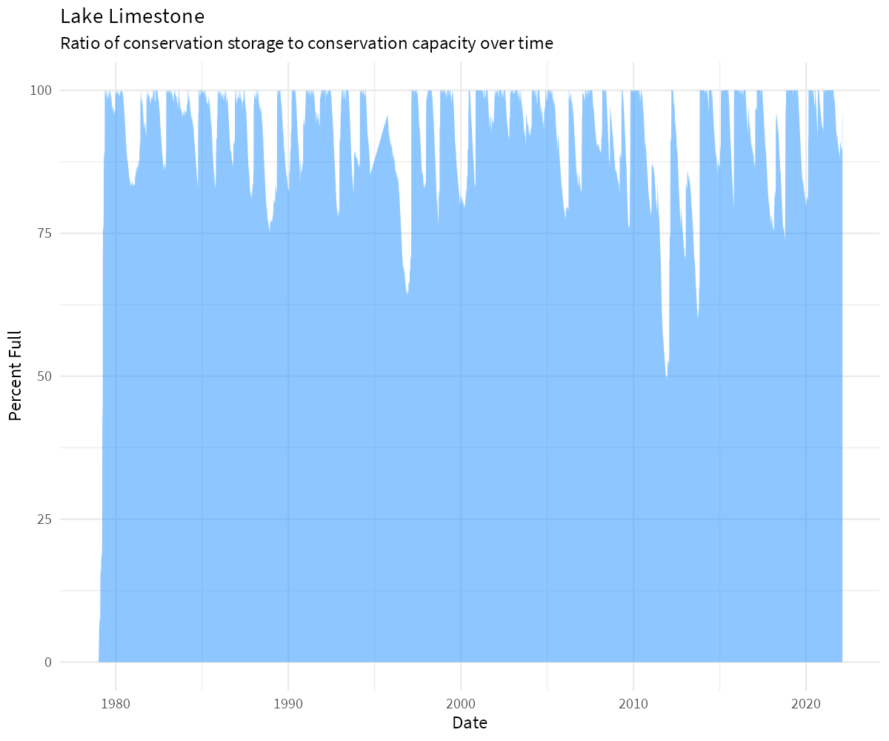
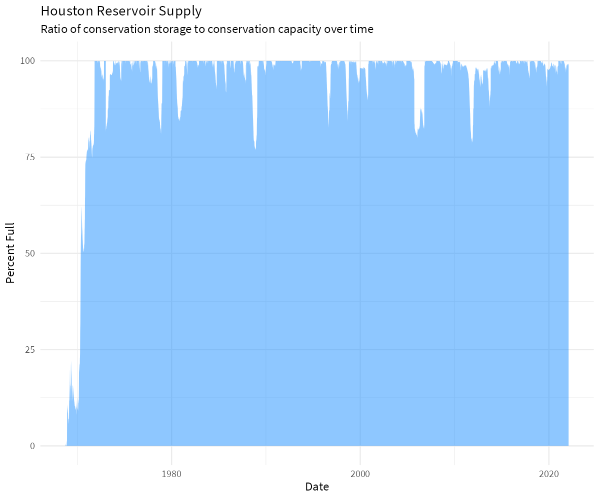
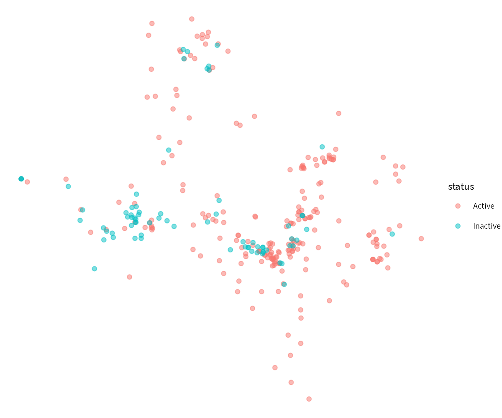
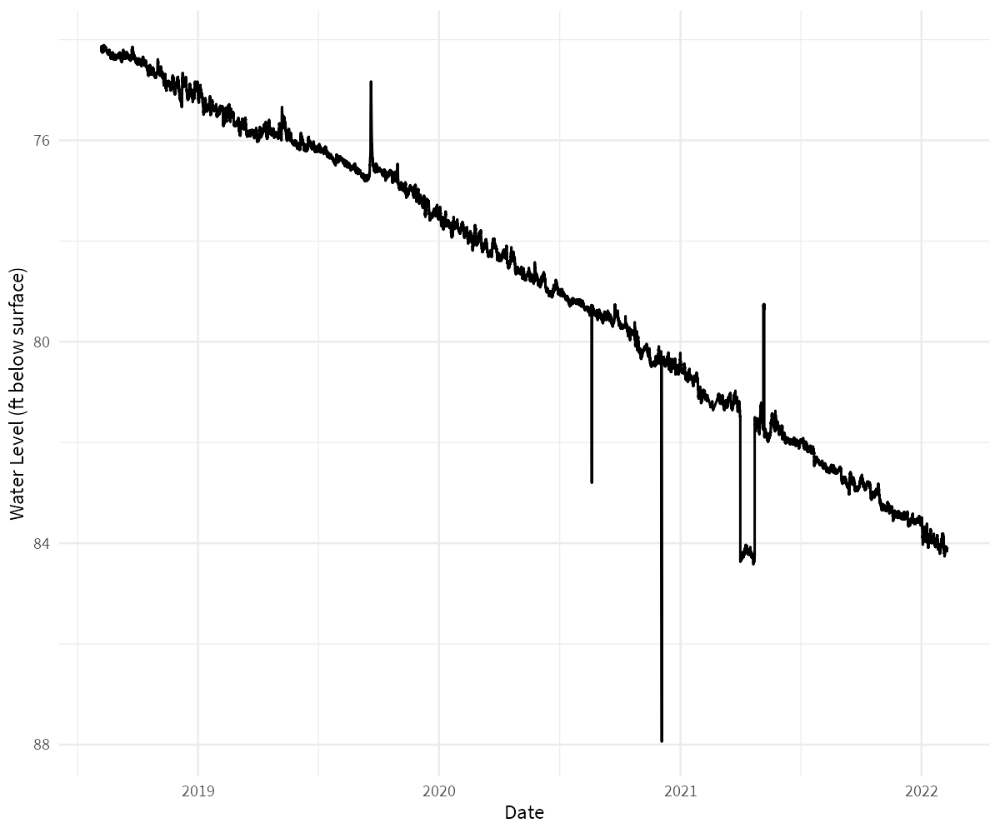
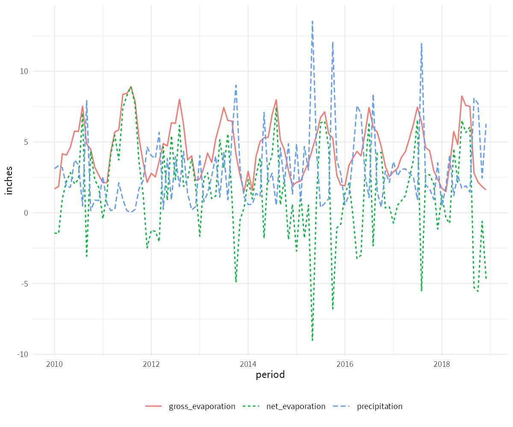
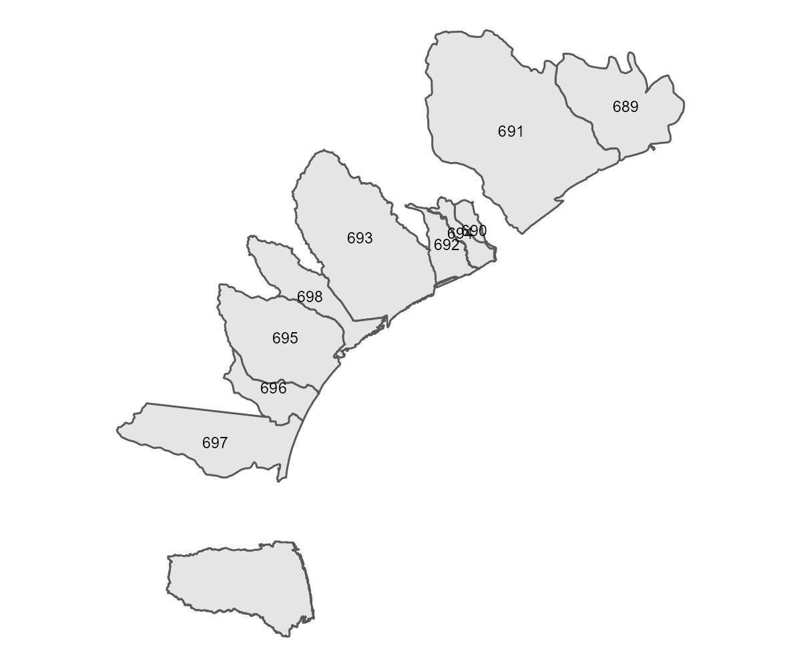
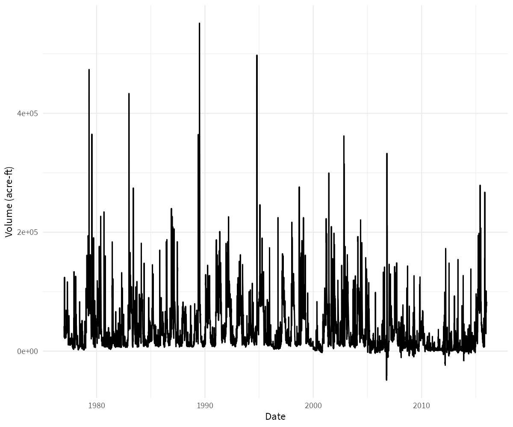

wd4tx is an R interface for downloading data from the Texas Water Development Board’s (TWDB) Water Data For Texas data portal (https://www.waterdatafortexas.org). Core functions include:
-
download_reservoir(): Absolute and relative water supply reservoir storage (for individual reservoirs and aggregated by planning area, municipality, river basin, and climate region) -
download_well(): Groundwater well levels -
download_lep(): Precipitation and evaporation by quad -
download_coastal_site_data(): TWDB coastal water quality (primarily salinity and dissolved oxygen) data -
download_coastal_hydrology(): TWDB freshwater inflow estimates for bays and estuaries
This package is not affiliated with the TWDB. Any questions or issues should be directed to: https://github.com/TxWRI/wd4tx/issues
Installation
wd4tx is not on CRAN. In order to install, use devtools.
install.packages("devtools")
devtools::install_github("TxWRI/wd4tx")Usage
Download Reservoir Storage Data
TWDB provides data for the percent storage, reservoir storage (acre-feet), conservation storage (acre-feet), and conservation capacity (acre-feet) for the water supply (and some flood control) reservoirs used by the state of Texas. The data is available for individual reservoirs, or aggregated by state planning area, river basin, municipal supply, and climate regions. See https://www.waterdatafortexas.org/reservoirs/statewide for more details.
Download individual reservoir storage data
library(wd4tx)
library(tidyverse)
df <- download_reservoir(reservoir = "limestone")
df <- df %>%
mutate(date = as.Date(date),
water_level = as.numeric(water_level),
surface_area = as.numeric(surface_area))
ggplot(df) +
geom_area(aes(date, percent_full),
fill = "dodgerblue",
alpha = 0.50) +
labs(y = "Percent Full", x = "Date",
title = "Lake Limestone",
subtitle = "Ratio of conservation storage to conservation capacity over time") +
theme_minimal(base_family = "Source Sans Pro",
base_size = 9)
Download reservoir storage data aggregated by municipality
df <- download_reservoir(aggregate_by = "municipal",
region_name = "houston")
df <- df %>%
mutate(date = as.Date(date))
ggplot(df) +
geom_area(aes(date, percent_full),
fill = "dodgerblue",
alpha = 0.50) +
labs(y = "Percent Full", x = "Date",
title = "Houston Reservoir Supply",
subtitle = "Ratio of conservation storage to conservation capacity over time") +
theme_minimal(base_family = "Source Sans Pro",
base_size = 9)
Download Individual Well Data
TWDB provides water level measurements from a statewide network of well level recorders. To download the information, all that is needed is the state well number. This information can be accessed with the download_well_meta() function. This will provide a sf dataframe:
df <- download_well_meta()
df
#> Simple feature collection with 302 features and 6 fields
#> Geometry type: POINT
#> Dimension: XY
#> Bounding box: xmin: -106.6058 ymin: 26.04472 xmax: -94.07056 ymax: 36.24333
#> Geodetic CRS: WGS 84
#> # A tibble: 302 x 7
#> aquifer aquifer_type county entity status well_number
#> <chr> <chr> <chr> <chr> <chr> <chr>
#> 1 Ogallala Unconfined Dallam Texas Water Development B~ Active 0260303
#> 2 Ogallala Unconfined Hansford Texas Water Development B~ Active 0354301
#> 3 Ogallala Unconfined Roberts Panhandle GCD Active 0503709
#> 4 Ogallala Unconfined Roberts Texas Water Development B~ Active 0509553
#> 5 Ogallala Unconfined Roberts Panhandle GCD Active 0510953
#> 6 Ogallala Unconfined Roberts Texas Water Development B~ Active 0517203
#> 7 Ogallala Unconfined Gray Panhandle GCD Active 0526501
#> 8 Ogallala Unconfined Wheeler Panhandle GCD Active 0529505
#> 9 Ogallala Unconfined Wheeler Texas Water Development B~ Inacti~ 0529711
#> 10 Other Unconfined Wheeler Panhandle GCD Active 0539904
#> # ... with 292 more rows, and 1 more variable: geometry <POINT [°]>
ggplot(df) +
geom_sf(aes(color = status, fill = status), alpha = 0.5) +
theme_void(base_family = "Source Sans Pro",
base_size = 9)
df <- download_well("6507905")
df <- df %>%
mutate(datetime = as.POSIXct(datetime))
ggplot(df) +
geom_line(aes(datetime, `water_level(ft below land surface)`)) +
scale_y_reverse() +
labs(y = "Water Level (ft below surface)",
x = "Date") +
theme_minimal(base_family = "Source Sans Pro",
base_size = 9)
Download Evaporation and Precipitation Data
df <- download_lep(quad = "710",
start_date = "2010-01",
end_date = "2018-12")
df <- df %>%
pivot_longer(cols = -period,
names_to = "label",
values_to = "inches") %>%
mutate(period = lubridate::ymd(period, truncated = 2))
ggplot(df) +
geom_line(aes(period, inches, color = label, linetype = label)) +
theme_minimal(base_family = "Source Sans Pro",
base_size = 9) +
theme(legend.position = "bottom",
legend.direction = "horizontal",
legend.title = element_blank())
Download Coastal Freshwater Inflow Data
Estimated freshwater inflows and inflow balances for Texas estuaries are provided to support environmental and water planning studies. Details are here: https://www.waterdatafortexas.org/coastal/hydrology
A geoid argument is required to identify the watershed data is requested for. Use download_coastal_geometry() to download sf files which include the name, location, and id.
df <- download_coastal_geometry(type = "watershed")
df
#> Simple feature collection with 10 features and 4 fields
#> Geometry type: MULTIPOLYGON
#> Dimension: XY
#> Bounding box: xmin: -98.91209 ymin: 25.8544 xmax: -93.5491 ymax: 30.75851
#> Geodetic CRS: WGS 84
#> # A tibble: 10 x 5
#> type name extradata$displa~ $watershed id geometry
#> <chr> <chr> <chr> <chr> <int> <MULTIPOLYGON [°]>
#> 1 Feature sabine Sabine Lake sabine 689 (((-94.02172 30.37507, -94~
#> 2 Feature brazo~ Brazos River Est~ brazos_ri~ 691 (((-95.53541 30.71278, -95~
#> 3 Feature galve~ Galveston Bay galveston 690 (((-95.53244 29.20769, -95~
#> 4 Feature matag~ Matagorda Bay matagorda 694 (((-95.98934 29.30877, -95~
#> 5 Feature san_b~ San Bernard Rive~ san_berna~ 692 (((-95.61194 28.77265, -95~
#> 6 Feature east_~ East Matagorda B~ east_mata~ 693 (((-97.13136 29.64648, -97~
#> 7 Feature arans~ Aransas Bay aransas 695 (((-97.5819 27.94688, -97.~
#> 8 Feature corpu~ Corpus Christi B~ corpus_ch~ 696 (((-97.82122 28.2044, -97.~
#> 9 Feature lagun~ Laguna Madre Est~ laguna_ma~ 697 (((-97.54611 27.65115, -97~
#> 10 Feature san_a~ San Antonio Bay san_anton~ 698 (((-96.83909 28.177, -96.8~Valid type arguments include c(basin", "bay", "estuary", "sub_watershed", "watershed"). Some types return simple features with topological errors. An example of one way to deal with this is shown below:
library(sf)
df <- df %>%
st_transform(crs = 3081) %>%
st_simplify()
ggplot(df) +
geom_sf() +
geom_sf_text(aes(label = id), size = 3) +
theme_void(base_size = 9)
With a valid id number, download_coastal_hydrology() can be used to download freshwater inflow data for the specified feature.
df <- download_coastal_hydrology(geoid = "689")
df <- df %>%
mutate(date = as.Date(date))
ggplot(df) +
geom_line(aes(date, fresh_in)) +
theme_minimal(base_family = "Source Sans Pro",
base_size = 9) +
labs(x = "Date", y = "Volume (acre-ft)") +
theme(legend.position = "bottom",
legend.direction = "horizontal",
legend.title = element_blank())
Download Coastal Water Quality Data
A list of sites is available with the download_coastal_sites() function:
df <- download_coastal_sites(all_stations = TRUE)
df
#> # A tibble: 137 x 14
#> id station_code name description stationstatus$id $name $description
#> <int> <chr> <chr> <chr> <int> <chr> <chr>
#> 1 208 6980 <a hre~ "East Bay @ ~ 1 live Station is r~
#> 2 202 6984 <a hre~ "West Bay @ ~ 1 live Station is r~
#> 3 205 6985 <a hre~ "West Bay @ ~ 1 live Station is r~
#> 4 206 6990 <a hre~ "West Bay @ ~ 1 live Station is r~
#> 5 204 6996 <a hre~ "Mad Island ~ 1 live Station is r~
#> 6 65 ARA Mid Ar~ "Aransas Bay~ 3 reti~ Station is r~
#> 7 258 ARA_1 ARA_1 "Port Aransa~ 4 temp~ Station was ~
#> 8 259 ARA_2 ARA_2 "Lydia Ann C~ 4 temp~ Station was ~
#> 9 260 ARA_3 ARA_3 "Corpus Chri~ 4 temp~ Station was ~
#> 10 261 ARA_4 ARA_4 "GIWW nr Cov~ 4 temp~ Station was ~
#> # ... with 127 more rows, and 9 more variables: agency <df[,3]>,
#> # coordinates <list>, estuary <chr>, bay <chr>, status_id <int>,
#> # the_geom <df[,2]>, basin <chr>, max_date <chr>, min_date <chr>A list of parameters measured at that station are available using download_coastal_site_parameters():
df <- download_coastal_site_parameters("SAB2")
df %>% select(units_name, code, name)
#> # A tibble: 9 x 3
#> units_name code name
#> <chr> <chr> <chr>
#> 1 PSU seawater_salinity Salinity
#> 2 m water_depth_nonvented Water Depth - vertic~
#> 3 mgl water_dissolved_oxygen_concentration Dissolved Oxygen Conc~
#> 4 v instrument_battery_voltage Battery Voltage
#> 5 mS/cm water_electrical_conductivity Electrical Conductivi~
#> 6 mS/cm water_specific_conductance Specific Conductance ~
#> 7 C water_temperature Water Temperature
#> 8 % water_dissolved_oxygen_percent_saturation Dissolved Oxygen Satu~
#> 9 dimensionless water_ph pH Level
df <- download_coastal_site_data(station = "SAB2",
parameter = "seawater_salinity",
start_date = "2010-01-01",
end_date = "2018-01-01",
bin = "hour")
df %>%
mutate(datetime_utc = as.POSIXct(datetime_utc))
#> # A tibble: 60,447 x 2
#> value datetime_utc
#> <dbl> <dttm>
#> 1 8.85 2010-01-01 00:00:00
#> 2 7.21 2010-01-01 00:00:00
#> 3 6.31 2010-01-01 00:00:00
#> 4 4.81 2010-01-01 00:00:00
#> 5 3.53 2010-01-01 00:00:00
#> 6 2.38 2010-01-01 00:00:00
#> 7 1.85 2010-01-01 00:00:00
#> 8 1.04 2010-01-01 00:00:00
#> 9 0.96 2010-01-01 00:00:00
#> 10 0.879 2010-01-01 00:00:00
#> # ... with 60,437 more rows